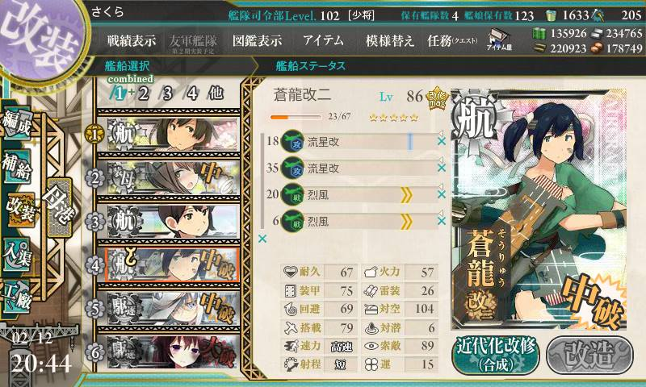
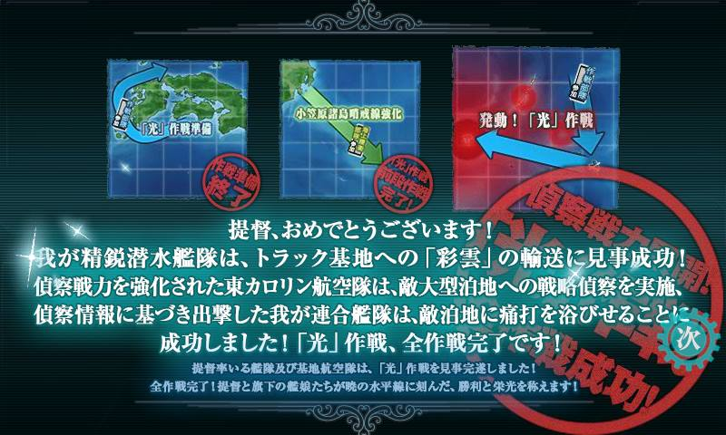
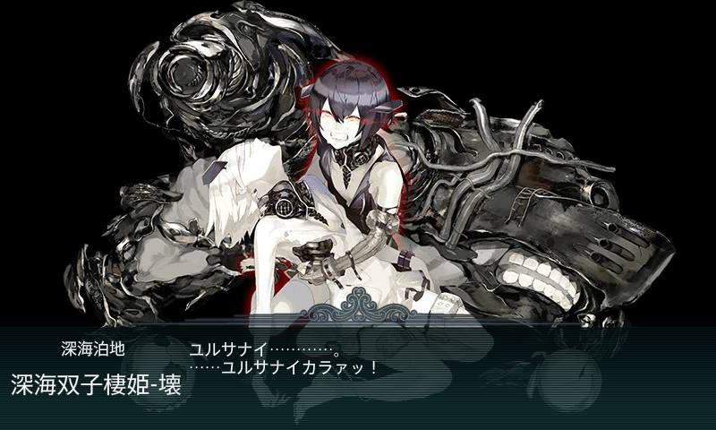

偵察戦力緊急展開！「光」作戦
作戰期間予定：2017/2/11~2017/2/28
全海域攻略完成！共消耗燃油、彈藥、鋼材、鋁土、桶
海域相關
前段作戰
E1：「光」作戦準備：
通常艦隊
輸送作戰
E2：小笠原諸島哨戒線強化：
聯合艦隊
BOSS：空母棲姬
關卡獎勵：神風型駆逐艦【松風】
艦娘掉落：夕雲型駆逐艦【藤波】
拡張作戦
E3：発動！「光」作戦：
三段作戰：偵查作戰、攻堅作戰、離島擊破作戰進行偵察作戰需要複數的彩雲（丙：九七式艦攻）
攻堅作戰BOSS：雙子棲姬
關卡獎勵：伊號潛水艦【伊14】
艦娘掉落：伊號潛水艦【伊13】
鎖船相關
E1：作戰部隊
E2：海上護衛部隊參加
E3：作戰部隊
新實裝艦娘
神風型駆逐艦【松風】
夕雲型駆逐艦【藤波】
伊號潛水艦【伊14】
伊號潛水艦【伊13】
E1:「光」作戦準備 甲
因為補給量都是100，所以乾脆選甲拿好一點的獎勵。
獎勵就自己看圖吧 還不錯!
獎勵就自己看圖吧 還不錯!
第一階段 補給
主要戰鬥點：A、B、D、I其他的都不是戰鬥點也不是補給點D點為航空戰，所以用SS會直接判定完勝3SS，到K的補給量大概是20吧。會視中大破程度減少。A、I為潛水艦B為輕巡(單縱)3SS會從D轉C，可以躲掉A點的戰鬥，所以建議用3SS，可以少打一場減少被中大破的機率，而且又有飛機可以塞在B點打輕巡。
|
第二階段
運輸條打掉之後，會換終點變成N點，只要打過一次就可以了。而基本上打的是B點跟M點，L點是航空戰，所以還是一樣直接完勝過，所以飛機我是一樣放在B點，因為B點全部的敵艦都有對潛能力......然後過了B點之後就剩I點了。這次真的是躺著過................................................
|
E2:小笠原諸島哨戒線強化 乙
E2
配置那些三小的就等等看圖吧，因為真的太多了。
換乙之後真的各種臉白，總之E2也非常簡單。
|
裝備配置就這樣: 雙支援的我就不上了， 就是很平常的二戰二航二驅， 至於照月跟島風會臉紅就是因為用司令部的關係把島風帶回家， 然後路基一定要有一隊放防空， 不然你就會像我的一隊一樣被打下來掉熟練。 |
機動部隊
一隊
二隊
陸基

E3:発動！「光」作戦 乙
選的原因不多說
就是為了新的彩雲
本來是想選甲，不過獎勵只差幾個改修資材而已
就沒打算自虐了
也因為丙沒有彩雲可以拿 只有伊14
所以只好打乙

第一階段
第一階段有兩次任務要解，分解一架水偵，然後系統會把20資材+一台彩雲改修成「彩雲輸送用分解」就這樣連續兩次。
所以總共要耗的東西有「2台水偵、40資材、2台彩雲」。
|
第二階段

新王 真的不得不抱怨。
|
發現王其實如果是CI或二連打她根本輕鬆，
重點是下面兩隻特別會吸砲火，
就這樣其實挺簡單的。
|